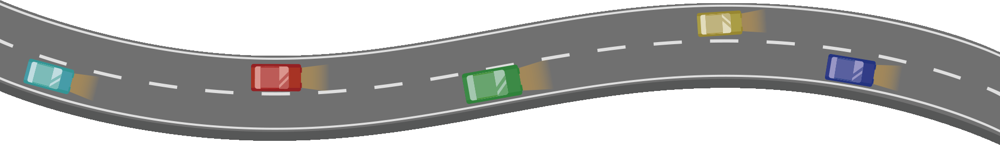
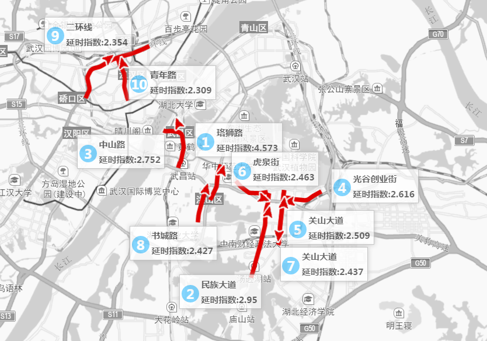
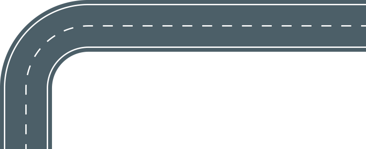

拥堵指数情况
武汉除2月外，全年指数震荡不大。全年有两次大幅下降趋势，分别在4月到8月，九月到12月。
除最堵9月拥堵延时指数在2以上，其他月份拥堵延时指数均低于2。

道路拥堵排名情况
(高速，其他道路top10相比去年等变化情况)

武汉通勤时间，通勤距离，季度或年度变化情况
16年武汉工作日高峰时段平均上班用时：平均24min，平均距离12.2km
马拉松情况，马拉松期间指数变化情况？push改变的用户出行
马拉松期间2016-04-10，武汉白天拥堵延时指数1.338，仅排名全国54位（60城市），且当日拥堵环比之前周日（2016-03-24）下降7.66%。
注：4-3日为假期，咱不在对比范围内。

>
拥堵处理时效提升
(信息化应用事故和拥堵信息快速知晓，快速响应)
通过信息化应用；事故和拥堵信息快速知晓，快速响应。及时出警，有针对的出行，提升拥堵处理的时效。
简单来说就是通过高德提供的异常拥堵、常规拥堵信息，有针对性出警处理拥堵，提升了拥堵的处理效率。
交通事故处理时效提升
通过机制优化：七快处理流程： 快知、快到、快救、快分、快堪、快撤、快赔；
线下搭配三支应急队伍：应急救援、汉警快骑，警保联动；
122警情精准定位、移动端报警（是指通过高德地图直接报警）、大数据分析等手段，将事故处理时间从75分钟下降到25分钟。
